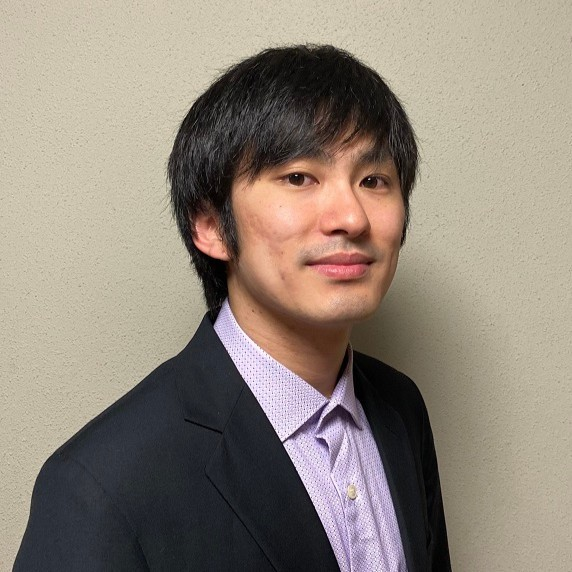

About
I am a PhD student at Shinshu University, in Japan, working with Multi-Objective Optimization, Evolutionary Computation and Constrained Benchmark Problems.
My current research focuses on developing a Multi-Objective Evolutionary Algorithm for Large Scale binary problems.
Besides my main research field, I have research experience in Machine Learning, Constrained Problems and Benchmark Problems.
I have professional experience in Hardware Design, PCB Design and Power Electronics Testing.
Currently looking to continue working on research on Optimization Problems and Machine Learning, both in the academia and in the industry.

Download CV (Japanese)
Education
- April 2022: Started a PhD course in Electrical and Computer Engineering at Shinshu University in Japan.
- March 2022: Received a Master degree in Electrical and Computer Engineering Engineering from Shinshu University, in Japan
- July 2020: Received a Bachelor degree in Electronic Engineering at Federal University of Technology – Paraná (UTFPR), in Brazil
Works
-
Multi-Objective Random Bit Climbers with Weighted Permutation on Large Scale Binary MNK-Landscapes
Felipe Honjo Ide, Hernan Aguirre, Kyoshi Tanaka
Parallel Problem Solving From Nature PPSN 2024
September 2024
(accepted)
-
Common Features in Large Scale MNK Problems
Felipe Honjo Ide, Hernan Aguirre
2023 IEICE Shin-etsu Branch IEEE Session
September 2023
(Young Researcher Award)
-
Study of Constraint Handling Techniques for MOEAs on SAT Constrained 0-1 Bi-Objective Knapsack Problems
Felipe Honjo Ide, Hernan Aguirre, Minami Miyakawa, Darrel Whitley
2021 Symposium on Evolutionary Computation
-
An Extension of MNK-Landscapes with Subsystems
Felipe Honjo Ide, Hernan Aguirre
2022 IEICE Shin-etsu Branch IEEE Session
September 2022
-
Exploring the Decision and Objective Space of SAT Constrained Multi-Objective Problems
Felipe Honjo Ide, Hernan Aguirre, Minami Miyakawa, Darrel Whitley
2022 Genetic and Evolutionary Computation Conference (GECCO)
July 2022
-
Development of a Scalable Constraints Generator Based on Satisfiability Problems for Multi-Objective Binary Benchmark Problems
Felipe Honjo Ide
Masters Thesis
March 2022
-
Behavior and Performance of Constraint Handling Techniques When Solving SAT Constrained Multi-Objective Knapsack Problems
Felipe Honjo Ide, Hernan Aguirre, Minami Miyakawa and Darrel Whitley
2021 Symposium on Evolutionary Computation
December 2021
-
A Generator for Scalable SAT Constrained Multi-Objective Optimization Benchmark Problems
Felipe Honjo Ide, Hernan Aguirre, Minami Miyakawa and Darrel Whitley
IEEE Symposium Series on Computational Intelligence (IEEE SSCI 2021)
December 2021
-
A Generator of SAT Constrained Multi-Objective Optimization Benchmark Problems
Felipe Honjo Ide, Hernan Aguirre, Minami Miyakawa and Darrel Whitley
2021 IEICE Shin-etsu Branch IEEE Session
September 2021
(Young Researcher Award)
Professional Experience
-
Progress Rail Services Corporation
Hardware Design Engineer
2018-2019
-
Progress Rail Services Corporation
Intern - Hardware Design
2017-2018
-
Verti Tecnologia
Intern - Hardware Deisgn & Firmware Programming
2017-2017
-
Progress Rail Services Corporation
Intern - Hardware Design
2014-2015